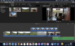

iMovie App for Windows PC
New Updates
Free iMovie Application
The iMovie application is a video editor for Mac OS X. You can use it to edit movies, add effects, and create titles and credits. It has a simple, clean interface that is easy to navigate. It is very intuitive and user-friendly. All of menus are easy to use and there are a lot of helpful tutorials for learning to use iMovie download. Menus are all organized with different options in tabs. The tabs are labeled "Edit," "Share," "Projects," "Movie," "Photos." The "Edit" tab has a few of basic editing tools, such as "Trim," "Ripple," "Redo." Apple introduced iPhone back in 2007, which created "smartphone era."
iPhone made it possible for many people to have their own mobile device and be connected to internet wherever they go. As time goes on, it's easy to see that iPhone is becoming more and more of a multi-purpose device. This is especially true with release of Apple iPad and the iPhone 4. With that being said, Apple has now introduced download iMovie for Windows application for the iPhone. It's a video editing software product that can be used for capturing, editing, sharing videos.
Interface
iMovie offers a variety of themes for different occasions. Themes range from contemporary to retro and everything in between. You can also customize your theme to your liking. The interface of iMovie free download is really simple and easy to use. It's laid out similarly to the built-in camera software product. It includes a grid of thumbnails of videos that you can select edit. Main menu includes video library, popular videos, camera. Video library is where you can edit, share, organize your videos. Camera is where you can take a video or snap a pic.
Usability
iMovie is a very user-friendly application. It's easy for beginners to get started, as many of its features are intuitive.It is really easy to use and it does what it advertises. I like interface, which is simple and easy to navigate. Features download iMovie for PC are easy to find. I also like that features are very user-friendly.
Functionality
iMovie download for PC includes a variety of tools to help you create and share your home movies. You can import videos from your camera or camcorder, or use camera built into your Mac, to capture footage. Has a lot of features and a lot of different editing tools. The software is very versatile and it has a lot of different features. There are many tools that you can use for editing, such as "Trim," "Ripple," "Redo." There are also a lot of effects that you can use. Includes an audio mixer and a comprehensive iMovie library of visual effects, titles, text options. There are a lot of features to choose from when editing a video. I like how you can zoom in out and how source is always on left when you're editing. I also like that you can add music from your library and have it fade in and out with video.
Support
iMovie is compatible with Mac OS X 10.6 or higher. Tutorial system is very user-friendly and easy to use. Tutorials are very helpful they are easy to follow. They provide step-by-step instructions for using different features. Within tutorials, they provide tips and tricks for editing special effects. Tutorials are written iMovie in a way that is easy to understand and they also provide easy-to-follow pictures. When I first opened program, I did not notice any tutorials for teaching how to use software product. I also didn't see any help or FAQ articles. I did, however, notice a link to App Store where you can purchase other apps. With that being said, I'm not sure how much support there is for iMovie app.
FAQ
- How do I add a video to my slideshow?
Please check out the tutorial for help on how to add a video to your slideshow. - How do I exit the iMovie video editor application?
To exit iMovie app download, click "X" button in upper-left corner of window. - How do I put my video on YouTube?
To upload your video to YouTube, you can upload your video to Windows Live and then share it via YouTube. To upload your video to Windows Live, click "Publish" button in the Movie Maker program and then click "Publish to Windows Live" on Publish to Web dialog box.
Conclusion
Overall, iMovie online is a simple, user-friendly editing software. There are many features and many different editing tools. Interface is easy to navigate and the tutorials are very helpful. In conclusion, I really like the iMovie apk download for iPhone. I think it's a great app for editing and sharing videos. Interface is very simple & user-friendly. Features are easy to use and very user-friendly. The only thing I'm worried about is the support. I think support could be better so that people aren't left to figure out how to use the features.